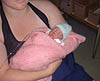

11th August 2001
Poppy had another go at breastfeeding today and has already started to improve. She has been well today, and has not had her blood transfusion yet, as the doctors are trying to see if she will start to produce enough red blood cells herself. Poppy will have her 2 month vaccinations of Meningitis C, HIB and Whooping Cough early tomorrow morning.
10th August 2001
Poppy now weighs 3lb and her milk has been increased to 23ml every 2 hours. She was quite alert this morning so Sharon tried breastfeeding again. Poppy did very well and took some extra milk that way. Sharon will try to breastfeed at least once every day from now on, to help Poppy get the hang of it and to help her increase her weight even more. Poppy should have her blood transfusion in the next few days, but her oxygen requirement is very low (24 per cent) so it is not considered a priority.
9th August 2001
Poppy enjoyed a quiet day today - sleeping most of the time. She came off CPAP for three hours this morning. Mike held her this eveing for about half an hour, during which time she smiled a lot and even gurgled once or twice!
8th August 2001
Poppy had her first breast feed this evening! She took to it very well, so she should get extra feeds from now on. Her milk consumption has increased anyway to 20ml every two hours. Poppy came off the CPAP ventilator for four hours today and should come off again tonight. She is coping very well with her time off and it seems to be slowly increasing. Poppy's weight is now 2lb 14oz; double her birth weight.
7th August 2001
Poppy is tolerating her two-hourly feeds well. She is also doing well during her time off the CPAP ventilator. This morning she spent 3 hours off and she came off again this evening too. Poppy will have a blood transfusion this week, as she is slightly anaemic.
6th August 2001
Poppy has put on some more weight. She now weighs 2lb 12oz. Her feeds have been increased to 9.5mls, and she is taking 19ml at one feed and is then being fed 19ml again 2 hours later. This is to help Poppy get used to the normal feeding routine of a new-born.
5th August 2001
Poppy is very well and continues to thrive during her time off of the CPAP ventilator. Her oxygen requirements are slowly going down, and she is enjoying being touched and cuddled. Since she is well, Sharon has had a cuddle for the third day running, which is great.
